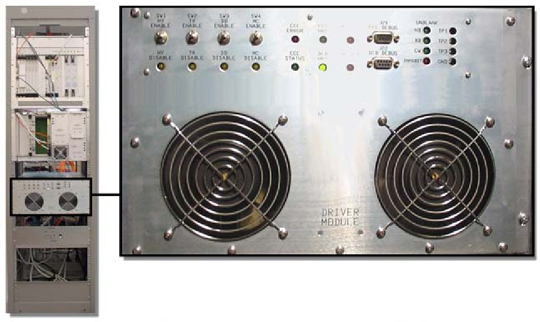
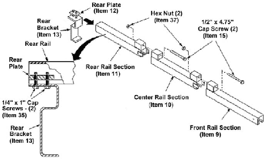
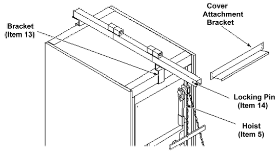
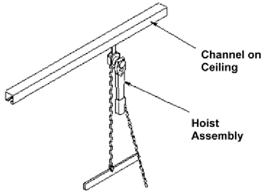

Operating Documentation
Direction 5440001-3, Rev# 6
Signa HDxt Service Methods
Module Version 3.0, Version Date 1/14/09
Operating Documentation |
| Required Persons | Preliminary Reqs | Procedure | Finalization |
|---|---|---|---|
| 1 | Not Applicable | 2 hours | 20 mins |
| Last Update | 08/31/08 |
| Item | Qty | Effectivity | Part# | Manufacturer | |
|---|---|---|---|---|---|
| Fixed Site Lift Tool Kit | 1 | - | 46-317266G6 | - | |
| Mobile Lift Tool Kit | 1 | - | 46-31266G2 | - | |
| Small Philips Screwdriver | 1 | - | - | - | |
| ||||
| Possible personal injury or equipment damage! | ||||
| The module could fall when using The lift tool. | ||||
| Before putting weight on the hoist chain, be sure that the links are aligned properly. This will help keep the chain from binding up, or becoming kinked, which is nearly impossible to correct when the chain is under tension. |
| ||||
| Prior to removing power from the Systems Cabinet, verify that ICNs are properly shut down. See ICN ON/OFF Procedure. | ||||
| NOTE: | Refer to proper Lockout / Tagout RF Systems Cabinet and RF Amplifier. |
This section describes the replacement procedures for the Driver Module (SeeIllustration 1 and Illustration 2). Although the module is one large FRU and requires no sub-assembly removal, its weight (45 lbs. or 20.4 kg) requires that a Lift Tool be used to remove it from the Systems Cabinet.
Illustration 1: DRIVER MODULE - FRONT VIEW

Illustration 2: DRIVER MODULE - REAR VIEW

| NOTE: | The Lift Tool enables replacement of the Driver Module by one person. This is the preferred method of replacement to avoid personal injury. |
Fixed Site Lift Tool Kit (46-317266G6). See Illustration 3.
See Fixed Site Lift Tool Kit for a complete list of the contents of the kit.
Illustration 3: FIXED SITE LIFT TOOL KIT 46-317266G6

Steps Step 2- Step 7 below are for fixed sites only. Step 8 andIllustration 8 shows the Mobile site setup.
Refer to theLockout / Tagout RF Systems Cabinet and RF Amplifier for the steps required to remove power from the Systems Cabinet.
| ||||
| Prior to powering down the entire Systems Cabinet, boot Applications software down to Root level. The VRE System, which resides in the Systems Cabinet can become corrupted if it looses power when Applications software is active. | ||||
| ||||
| Right click on the mouse, select Service Tools, and then select System Restart. You can power down the Systems Cabinet when the login GUI appears | ||||
Assemble the three-piece rail (Items 9, 10, and 11) with 4.75” x ½” cap screws (Item 15) and hex nuts (item 37). See Illustration 4. Tighten with a crescent wrench.
Illustration 4: HOIST ASSEMBLY

Assemble the rear bracket (Item 13) to the rear plate (Item 12) with two cap screws (Item 35).
Insert the plate (Item 12) into the rear rail section (Item 11) until flush, and tighten the cap screws (Item 35).
Place the assembly on top of the cabinet with the attached bracket to the rear of the cabinet. See Illustration 5.
Illustration 5: ATTACHING ASSEMBLY TO CABINET

Attach the other bracket (Item 13) to the plate (Item 12) with two cap screws (Item 35).
Insert the plate (Item 12) into the front rail section (Item 9). Push the bracket against the cabinet front, and tighten the cap screws. See Illustration 6.
Illustration 6: ATTACHING FRONT BRACKET TO CABINET

Insert the Hoist Assembly pivot bearings with the handle at left, into the front rail section for a fixed site (see Illustration 7) andIllustration 8 for mobile sites.
Illustration 7: ATTACHING HOIST TO CABINET (FIXED SITE)

Illustration 8: ATTACHING HOIST TO CABINET (MOBILE SITE)

Insert the lock pin (Item 14) through the holes in the front rail section. See Illustration 7.
Attach a grounding wrist strap.
Remove connections from the rear of the Driver Module.
Remove the four screws that attach the Driver Module to the System Cabinet frame.
Pull the driver module forward (it’s mounted on a roller tray) until the roller tray reaches its maximum extension limit.
Attach the hanger (Item 20) to the hanger stud on the right side of the driver module. Repeat this process on the left side. See Illustration 9.
Illustration 9: ATTACHING THE HANGER TO THE HANGER STUD

Apply slight tension to support chain with chain hoist.
Press the release catch on the side of each roller tray. The roller tray should detach, and allow the driver module to swing freely on the hoist.
Lower the driver module to the ground and remove the hangers.
Position the replacement driver module in front of the cabinet, and attach hangers to the hanger studs, which are located on both the left and right side of the Driver Module.
Use the hoist to raise the Driver Module.
Attach each side of the roller tray.
Lower the hoist chain slightly. This will allow you to test the roller slide action, and ensure that the Driver Module is connected correctly to the roller tray and Systems Cabinet.
Remove the hangers from the Driver Module.
Gently push the Driver Module back into the cabinet, and reattach the four screws which connect the Driver Module to the System Cabinet frame.
Re-connect all connections removed earlier the new Driver Module.
Remove and disassemble the hoist, and repack it in the case.
Power up the Systems Cabinet.
Perform a TR/DD Calibration after the replacement
Run one head and one 4-, 8 - or 16-channel multi-coil scan.